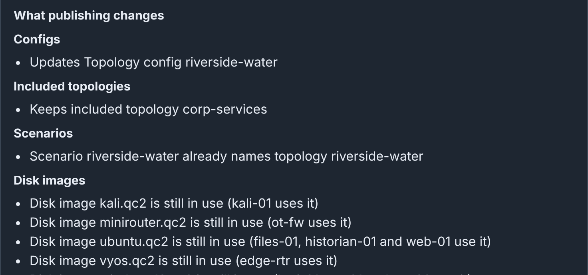
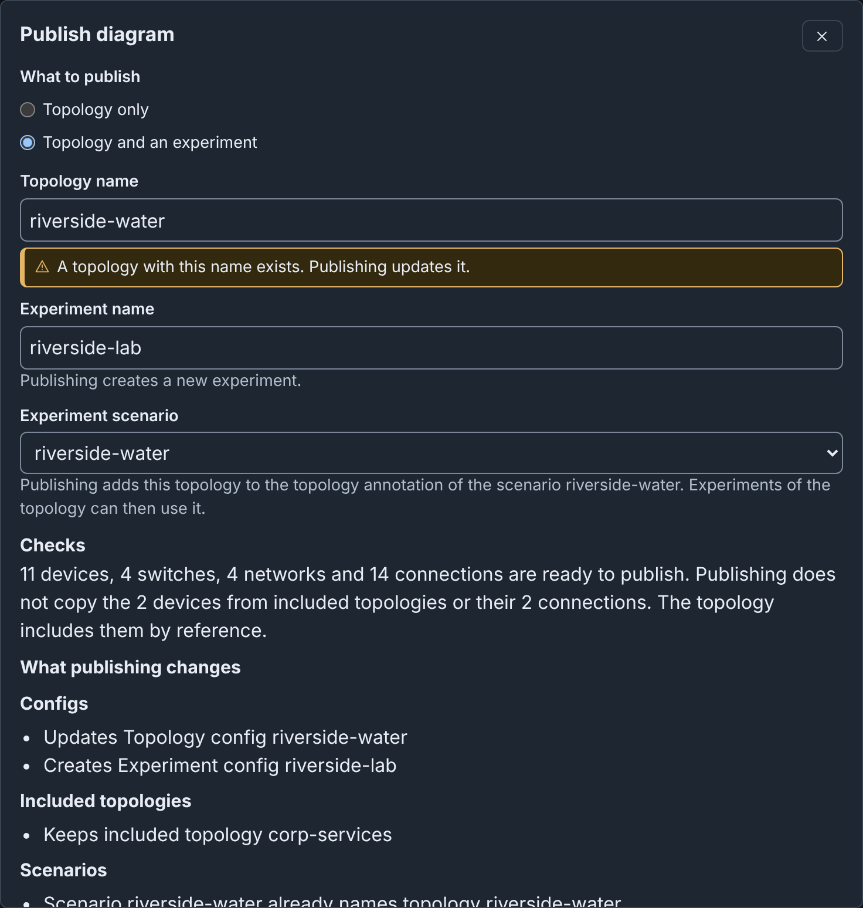
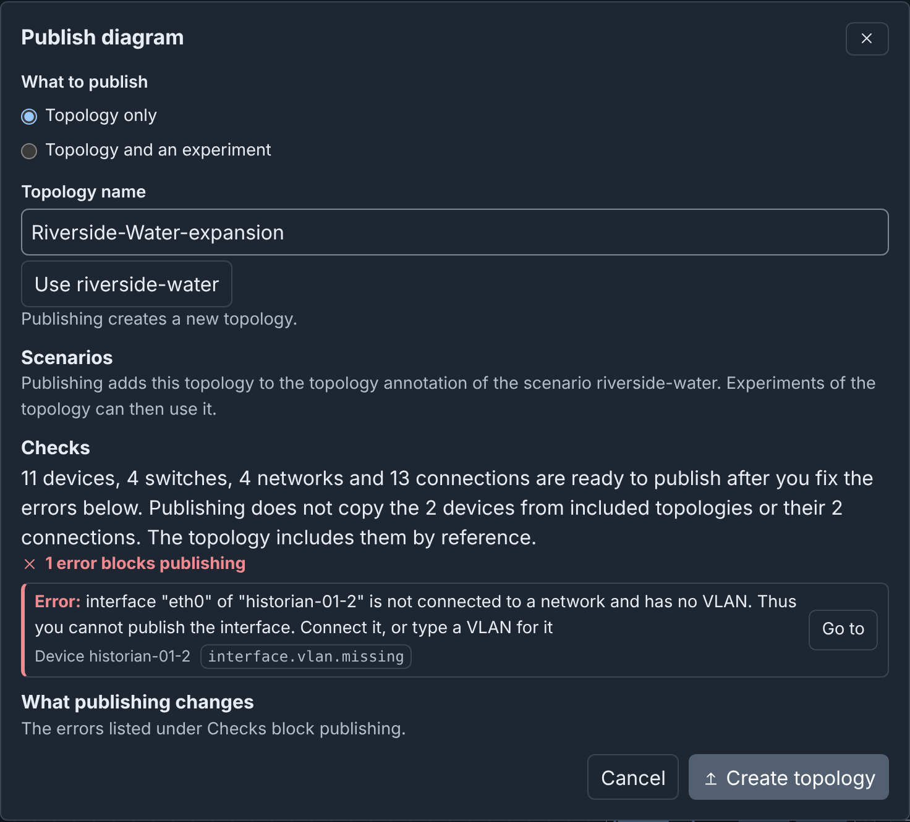

Publishing¶
Publish writes a Topology config from a draft, and optionally an Experiment config with one of the scenarios that the diagram lists. It uses the last saved snapshot, and the server checks that snapshot again before it writes.
Before you publish¶
- Fix the errors, and the warnings that block publishing (see What blocks publishing).
- Apply or cancel your changes in the Inspector. Publish applies and saves valid changes. Changes that it cannot apply block publishing, and the dialog names them.
- Check your permissions. Publish is not available in a published diagram, which opens read only, or when your role cannot update configs.
Publish is in the toolbar, in the command palette as Publish…, and on each card of the drafts page.
Publish a topology¶
To update the topology riverside-water from the Riverside Water draft:
- Open the draft.
- Click Publish.
- Under What to publish, keep Topology only.
- Below Topology name, click Use riverside-water. The hint says
"A topology with this name exists. Publishing updates it." A config name
holds only letters, numbers,
_,@,.and-. - Read Checks. It says what is ready to publish.
- Click Update topology. Builder asks "Replace topology riverside-water?".
- Click Update topology again.
- Click Close.
What the topology holds¶
The Topology config holds the settings of each device, and the network of
each connected interface as its vlan. It does not hold the parts that
only Builder uses: positions, groups, notes, drawings, colors, line
styles, icons, layers and templates. It also does not hold the Subnet
and Gateway of a network.
What publishing changes¶
What publishing changes, above the buttons, compares the server with the result of the publish:
- The configs that Publish creates, updates or does not change.
- The included topologies that it adds, removes or keeps.
- The scenarios that get the topology.
- The disk images that the devices use.
- With an experiment, the VLAN aliases that change.

Create or update¶
The hint under Topology name says what publishing does with that name, and the button names the action. When a topology with that name exists and this draft cannot update it, the dialog refuses the name (see Publish hints and buttons).
A draft can update a topology in these cases:
- The draft published the topology.
- The draft is an import of the stored topology.
- You opened the draft from the published diagram.
- The draft is an upload of a Builder document from such a draft.
A copy, a combined import and an import of a config file cannot update the source topology (see Create or update).
You cannot undo an update. phēnix keeps no earlier version of a config.
To go back, restore an earlier snapshot in Draft History. Then publish
again. An update keeps the other annotations of the topology and adds
builder-doc.
The result¶
The dialog lists each stage and its result (see
Publish results). When a stage fails, the
dialog says "Published with failures." or "Publish failed. It wrote no
configs." Remove the cause, for example stop a running experiment. Then
click Back and publish again with the same names. The stages that are
done show skipped, and Publish writes nothing twice.

Publish a topology and an experiment¶
To update riverside-water and create the experiment riverside-lab:
- Open the draft.
- Click Publish.
- Under What to publish, select Topology and an experiment.
- Below Topology name, click Use riverside-water.
- In Experiment name, enter
riverside-lab. - Keep Experiment scenario
riverside-water. - Click Update topology and create experiment. Builder asks "Replace topology riverside-water?".
- Click Update topology and create experiment again.
- Click Close.

Publish writes the VLAN alias of each network to vlans.aliases of
the experiment.
An experiment name follows the config name rule, and it cannot be all.
Some servers name each network bridge after its experiment. On these
servers, an experiment name has at most 15 characters.
A draft can update only the experiment that it comes from, or that it published. An update runs the configure stage of the apps. Stop the experiment before you update it. An update removes the host pins of devices that are no longer in the topology, with a warning (see Host pins).
Scenarios¶
In both modes, Publish adds the topology to the topology annotation of
each listed scenario, when the annotation does not name it yet.
Experiment scenario selects the scenario of the experiment, or
No scenario. Publish refuses when a listed scenario does not exist or
your role cannot read it. It also refuses when your role cannot update a listed
scenario whose annotation needs the topology (see
Scenarios).
What blocks publishing¶
Errors block publishing, for example two devices with one hostname. Five kinds of warnings also block publishing. The draft saves with them, but the Publish dialog lists them as errors:
- An interface with no network and no VLAN, on a device that is not external.
- Two interfaces on one network with the same IP address or MAC address.
- A hostname that phēnix refuses: one character,
all, all digits, orphenixon a Windows device. - A device setting that stops the experiment:
- An interface with protocol
ospfon a Router or Firewall of OS typevyatta,vyosorlinux, with nonetwork.ospf. - An
ntp-serverlabel that names no interface with an IP address.
- An interface with protocol
- A device that is not external, with no drive.
Under Checks, the dialog lists the errors first, then the warnings, each with Go to. When the server refuses a publish, the dialog shows its reason and its issues with their codes.
If you copy historian-01, as in the
tutorial, Publish lists one error (see
Example: Riverside Water expansion).

Tip
Download > Topology YAML saves the topology that Publish would write, and lists every issue that blocks publishing.
Publish again¶
Publish again with the same names after each set of edits. The draft remembers what it published. Two things can stop a second publish:
- Another draft published the topology.
- Someone changed the topology outside Builder, for example with
phenix config edit.
The hint under Topology name gives the reason. In both cases, edit a draft of the topology as it is now (see Edit a published topology), or publish under another name.
When the source config changed¶
A draft remembers the config that it comes from. Publish refuses the draft under any name when that config changed after Builder made the draft. The dialog shows a warning at the top. To keep your work:
- Make a draft of the config as it is now. Click the edit button of the topology on the Configs page, or import it again.
- Copy the changed devices from the old draft, and paste them into the new draft.
- Connect the pasted devices again. A pasted device keeps its settings but not its connections.
See When the source config changed.
Included topologies¶
Riverside Water includes the topology corp-services. The published
topology names corp-services and does not copy its devices. A diagram
imported with Combine into one new topology publishes the included
devices as its own. When the diagram and an included topology use one
hostname, Publish refuses (see
Included topologies).
Edit a published topology¶
On the Configs page, click the tag builder in the row of the
topology. Builder opens the draft that published it, or else a draft of the
published diagram. Edit as a draft on the
Published Diagrams tab opens the same draft (see
Editing a published topology).
Advanced¶
- A topology can name a Builder file as its diagram. See A Builder file beside a topology and Publishing to a topology that names a Builder file.
- A draft imported from a legacy Builder topology replaces its legacy diagram when it publishes to the same topology. See Converting a stored topology.
- The Scenarios dialog writes Scenario configs to the server at once, and Cancel does not undo them. See Storing scenarios from the Scenarios dialog.
More detail¶
- Publishing: details: every rule, refusal and message.
- What each task needs: the permissions of publishing.